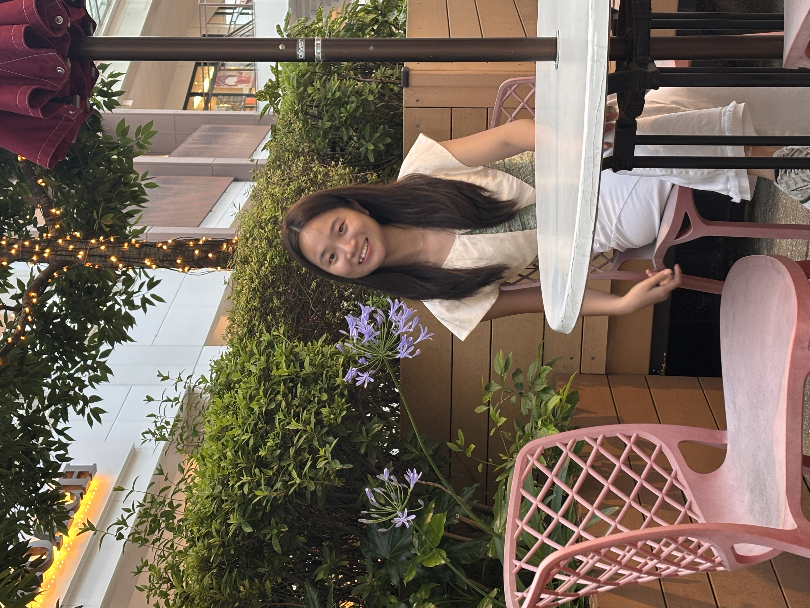

I hold a Master of Arts in Education for Sustainability from The Education University of Hong Kong (EdUHK). Driven by a curiosity for innovative pedagogy and educational policy, my research focuses on transformative learning and student development in higher education—particularly through experiential education, service-learning, and SDG/IDG-aligned initiatives.
Currently, I serve as a Project Assistant at EdUHK, coordinating operational and research activities for a flagship, university-wide Sustainable Development Goals (SDGs) experiential learning initiative funded by the Central Reserve Allocation Committee (CRAC). My work spans research design, survey and qualitative analysis, learning analytics, and working closely with students and instructors to support their learning journeys.
Feel free to reach out for conversations and exchanges!
Qualitative Methods: Semi-structured Interviews, Focus Groups, Thematic Analysis, Image-based Coding, Codebook Development.
Quantitative Methods: SPSS (Regression, Correlation, t-tests, Descriptive Statistics), Survey Design & Validation.
Tools & Educational Tech: Moodle Learning Analytics, Canvas, Covidence, MemoQ, Course Design.